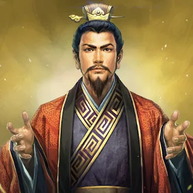

เล่าปี่
ผู้นำที่ยึดมั่นในคุณธรรมและมิตรภาพ
หนึ่งยุคสมัย สามอาณาจักร
เรื่องราวของมิตรภาพ กลยุทธ์ การเมือง
และการช่วงชิงอำนาจ ที่ยังคงตราตรึงใจ
มาจนถึงปัจจุบัน
ทำความรู้จัก
จากปลายราชวงศ์ฮั่น สู่การแบ่งแยกอำนาจระหว่างวุยก๊ก จ๊กก๊ก และง่อก๊ก
เรื่องราวการต่อสู้เพื่อแผ่นดินที่เต็มไปด้วยกลยุทธ์ ไหวพริบ
และการตัดสินใจของเหล่าวีรบุรุษผู้เปลี่ยนโฉมหน้าประวัติศาสตร์จีน
อำนาจและกลยุทธ์
คุณธรรมและมิตรภาพ
พื้นที่และการปกครอง
บุคคลผู้เปลี่ยนชะตาแผ่นดิน และทิ้งร่องรอยไว้ในประวัติศาสตร์

ผู้นำที่ยึดมั่นในคุณธรรมและมิตรภาพ

นักรบผู้มีชื่อเสียงด้านความกล้าหาญและความซื่อสัตย์

นักการเมืองผู้ชาญฉลาดและมากด้วยเล่ห์เหลี่ยม

นักวางแผนและที่ปรึกษาคนสำคัญของเล่าปี่
บทเรียนที่ยังใช้ได้ในทุกยุคสมัย
คิดให้รอบด้าน รู้เขารู้เรา ก่อนลงมือทำ
เลือกใช้คนให้เหมาะสมกับความสามารถ
คำพูดและเหตุผลช่วยเปลี่ยนสถานการณ์
“ ชัยชนะที่แท้จริง
ไม่ใช่แค่การเอาชนะศัตรู
แต่คือการเข้าใจผู้คน ”
คำตอบสั้น ๆ สำหรับผู้ที่เพิ่งเริ่มอ่านสามก๊ก